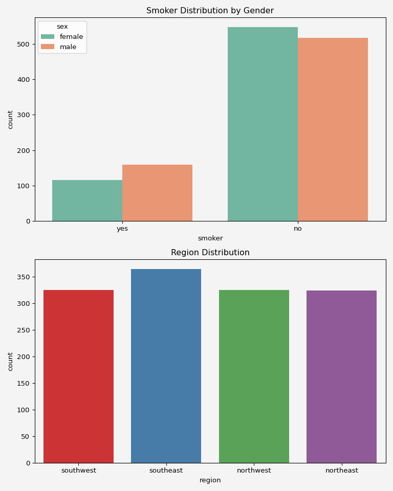

Bayesian Probabilistic Models for Classification
12 min
Tuesday, October 22, 2024

 Suppose we are working on a data science project and the data contains both contineous and categorical variables. For example, we want to build a predictive model for a life insurance company. The model will predict the annual company spending on individuals depending on their age, bmi, sex, smoking habit, number of children, and region in the US where the belong. So here, our target variable is a contineous variable and the feature variables contain both contineous and categorical variables.
To understand how important each feature is, there are many possible ways. For example, when we do the exploratory data analysis (EDA) we can do some plotting to see how each feature inteacts with the target variable, or maybe calculating correlations of the features and target variables. However, when the feature is contineous it is not a big issue to calculate the correlation matrix. But when the feature is categorical or ordinal, for example, in this predictive modeling case, how do we know if the number of children or smoking habit have impact on insurance charges? Plotting boxplot or countplot from the seaborn or any other library may help, give some primary idea. But how do we quantify the correlations?
Here comes the statistical method one-way Analysis of Variances (ANOVA) among many other alternatives. Machine libraries like scipy has built-in functions that can compute the ANOVA’s for each categorical feature. We will see the implementation of this at the end of this post. This blog post is about the simple explanation of the mathematics behind the ANOVA method.
This is the 5 random sample data that we are talking about. We will use this data to explain the mathematical formulation of the model.
import pandas as pd
data = pd.read_csv('insurance.csv')
print(data.sample(5, random_state=111)) age sex bmi children smoker region charges
1000 30 male 22.99 2 yes northwest 17361.7661
53 36 male 34.43 0 yes southeast 37742.5757
432 42 male 26.90 0 no southwest 5969.7230
162 54 male 39.60 1 no southwest 10450.5520
1020 51 male 37.00 0 no southwest 8798.5930We will explain the method using the feature children.
child = data.children.value_counts().sort_index()
c0=data[data['children']==0].charges.values.tolist()
c1=data[data['children']==1].charges.values.tolist()
c2=data[data['children']==2].charges.values.tolist()
c3=data[data['children']==3].charges.values.tolist()
c4=data[data['children']==4].charges.values.tolist()
c5=data[data['children']==5].charges.values.tolist()| Children 0 | Children 1 | Children 2 | Children 3 | Children 4 | Children 5 |
|---|---|---|---|---|---|
| [16884.924, 21984.47061, 3866.8552, 3756.6216, 28923.13692, 2721.3208] | [1725.5523, 8240.5896, 1837.237, 10797.3362] | [6406.4107, 6203.90175, 12268.63225] | [4449.462, 7281.5056] | [4504.6624, 11033.6617, 10407.08585] | [4687.797, 6799.458] |
| Total 574 | Total 324 | Total 240 | Total 157 | Total 25 | Total 18 |
A one-way analysis of variance is a method to compare \(k\) homogenous groups when the experiment has \(n_i\) response values for each each group \(i\). Therefore, total data \(n=\sum_{i} n_i\) and \(y_{ij}\) represent the \(j\)th observation of the \(i\)th group. For our example above, we have \(\sum_{i=1}^{6}n_i=\)(574+324+240+157+25+18)= 1338 and \(y_{12}=\) 21984.47061 meaning, group 1 and second element.
Now let’s define \[ \mu_i = \frac{1}{n_i}\sum_{j=1}^{n_i}\frac{y_{ij}}{n_i};\hspace{4mm}\text{for } i=1,2,\cdots, 6 \]
Since all the groups are coming from the same sample/population, we must assume that they all have common variance. This \(\textcolor{red}{\text{homogeneity assumption is crucial}}\) for ANOVA analysis. So, irrespective of their group assignment, each \(y_{ij}\sim (\mu_i, \sigma^2)\)
The main purpose of one-sided ANOVA is to act as a judge like in a court house. It assumes that there is no variation in any group. All group has the same mean. So it sets a null hypthesis and declares that there is no difference in the groups whereas the alternative is set to the opposite. Let’s see what happens to our data
import numpy as np | \(\mu\) | Values |
|---|---|
| \(\mu_1\) | 12365.98 |
| \(\mu_2\) | 12731.17 |
| \(\mu_3\) | 15073.56 |
| \(\mu_4\) | 15355.32 |
| \(\mu_5\) | 13850.66 |
| \(\mu_6\) | 8786.04 |
Share on
You may also like
@online{islam2024,
author = {Islam, Rafiq},
title = {How Do We Treat Categorical Features for Our Data Science
Project?},
date = {2024-09-12},
url = {https://mrislambd.github.io/dsandml/dataengineering/},
langid = {en}
}